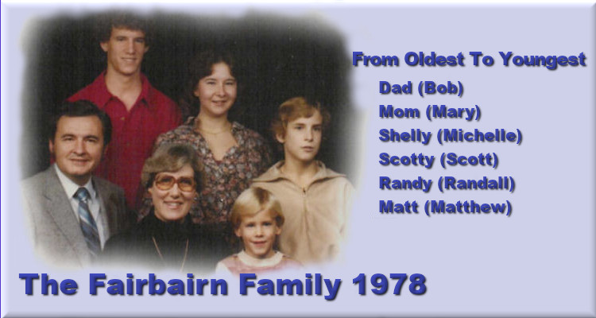

 |
Bob Fairbairn enjoyed a career in computer software development. In the years since his retirement, he has adapted his career into a hobby, using the Javascript programming language that is available in internet browsers. Bugs - Animated simulation of the behaviour of a group of bugs. ColorThing - Produces a variety of color patterns. ColorMove - Animated color patterns. ColorBrush - Colorful Random Brush Strokes. MandelBob - Makes images from the Mandelbrot Set. MandelZoom - Animated zoom into areas of the Mandelbrot Set. JuliaSetBob - Makes images from the Julia Set. JuliaSetCycle - Animated display of Julia Set patterns. SuDokuBob - Sudoku Puzzles to print or play online. InTheBeginning - Simulation of bodies in the early universe, using the laws of mass, motion, and gravity. Sol - Simulation of the beginnings of a solar system, with a massive star at the center. Orbits - When three or more bodies begin orbits around their center of mass, their motions become chaotic and unpredictable. This is known as the N-body Problem. |